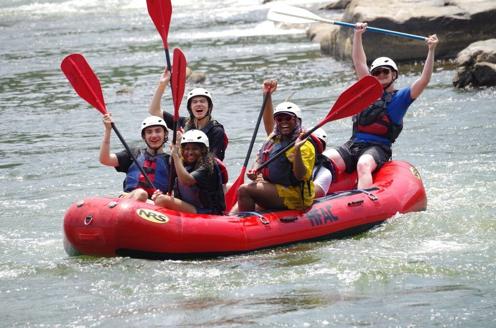
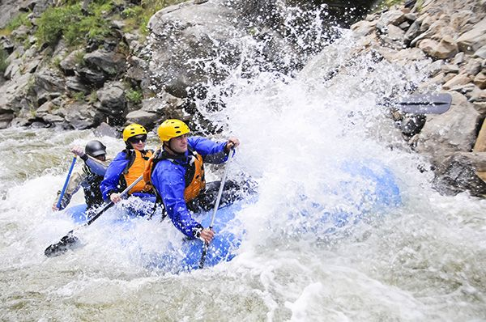
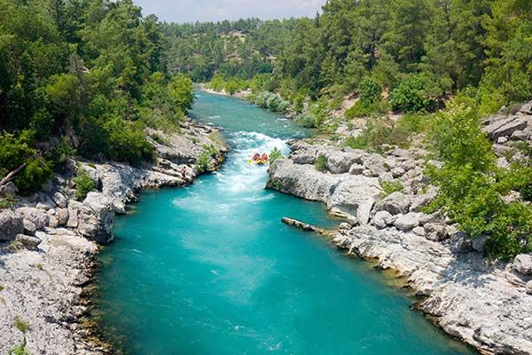
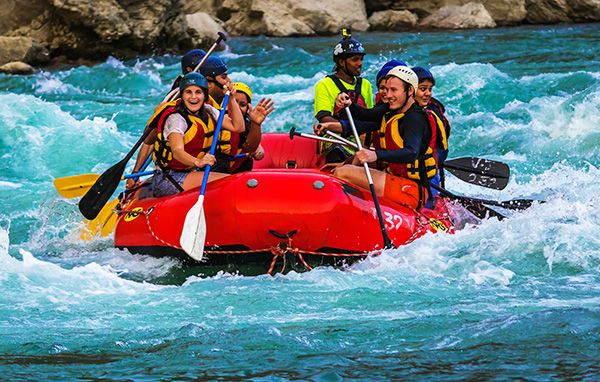

From the roaring Big Drops of Cataract Canyon to a lazy afternoon float below Fisher Towers, our guides put you on the right river for the day you want to have. Every trip includes professional instruction, top-rated safety gear, and a story worth telling.
Find Your Trip
Ride Utah's Wildest Water
Why Paddle With Us

Guides Who Know Every Rock
Our guides average more than eight seasons on these rivers. They are certified in swiftwater rescue and wilderness first aid, and they read the water so you can enjoy the ride. Small boat ratios mean you paddle, you learn, and you never feel like part of a crowd.
Trips for Every Comfort Level
Bringing an eight-year-old on their first raft? Take the Moab Daily. Chasing Class IV? Cataract Canyon runs at high water every spring. We match the river, the craft, and the pace to your group instead of selling everyone the same seat.


All the Gear, Already Packed
Rafts, inflatable kayaks, paddles, helmets, Coast Guard approved life jackets, dry bags, and riverside lunches are included on every trip. On multi-day runs we haul the kitchen, the tents, and the groover so your only job is to show up with sunscreen.
The River Is Running
Spring runoff peaks in late May, and the best dates book out first. Take a look at what is available this season.
Browse All Trips